Level 7
Level 7 / Level 7+ [not classified]
there are no scores currently under discussion.
Level 7 / Level 7+ [special mention]
Testify [PST]
Final Verdict
Arcahv [PRS]
Black Fate
BLRINK [PRS]
Adverse Prelude
conflict [PRS]
Vicious Labyrinth
DRG [PRS]
Cytus II (Chapter 2)
怒槌 [PRS]
CHUNITHM
Sheriruth [PRS]
Eternal Core
蜘蛛の糸 [PRS]

CHUNITHM (Chapter 3)
XTREME [PRS]
WACCA (Chapter 2)
ΟΔΥΣΣΕΙΑ [PRS]

Esoteric Order (Pale Tapestry)
[X] [PRS]

maimai (Chapter 2)
Manic Jeer [PRS]

Memory Archive
Meta-Mysteria [PRS]
WACCA (Chapter 2)
Level 7 / Level 7+ [-2 (easiest)]
inkar-usi
Arcaea
Level 7 / Level 7+ [-1 (easier)]
Fairytale

Arcaea
Infinity Heaven

Arcaea
Moonlight of Sand Castle

Dynamix
Level 7 / Level 7+ [0 (appropriate)]
Blossoms
Ambivalent Vision
Dream goes on

Lanota
vsキミ戦争

Ambivalent Vision
Sayonara Hatsukoi

Arcaea
Suomi
Arcaea
Vexaria
Arcaea
Level 7 / Level 7+ [+1 (harder)]
Brand new world

Arcaea
クロートーと星の観測者

Arcaea
First Snow

Divided Heart
Rise
Arcaea
Level 7 / Level 7+ [+2 (hardest)]
Dement ~after legend~

Arcaea
Jingle
Arcaea
Paradise
Crimson Solace
Level 8
Level 8 [not classified]
Innocence
Memory Archive
AttraqtiA [PRS]
Memory Archive
Aurgelmir [PRS]
Memory Archive
G e n g a o z o [PRS]

W.Extend 1: Visions
HIVEMIND [PRS]
W.Extend 1: Visions
Rise of the World [PRS]

Lasting Eden
彼方の夢へと [PRS]
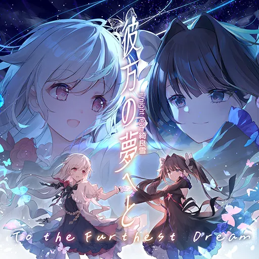
Memory Archive
UNKNOWN LEVELS [PRS]

Lasting Eden
γuarδina [PRS]
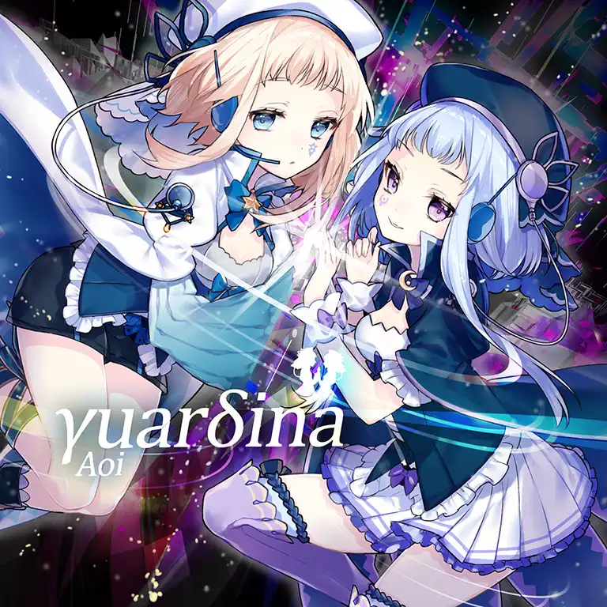
Memory Archive
Level 8 [-2 (easiest)]
Dantalion [PRS]
Black Fate
Qovat [PRS]
Memory Archive
1F√

W.Extend 1: Visions
Bookmaker (2D Version)

Arcaea
Diode
Arcaea
Dot to Dot feat. shully

Memory Archive
Genesis
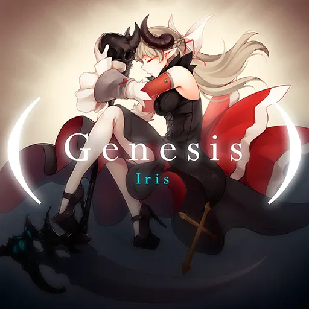
Ambivalent Vision
光
Tone Sphere
I've heard it said

Eternal Core
Relentless
Eternal Core
Shades of Light in a Transcendent Realm

Arcaea
Level 8 [-1 (easier)]
Aleph-0 [PRS]
W.Extend 2: Chronicles
Crimson Throne [PRS]

Memory Archive
Cyaegha [PRS]

Absolute Reason
eden [PRS]
WACCA (Chapter 2)
Ether Strike [PRS]

Luminous Sky
Halcyon [PRS]
Luminous Sky
Live Fast Die Young [PRS]

Binary Enfold (Shared Time)
Ringed Genesis [PRS]

Adverse Prelude
四月の雨

maimai
blue comet

W.Extend 1: Visions
enchanted love

W.Extend 1: Visions
Hall of Mirrors

Tone Sphere
ハルトピア, ~Utopia of Spring~

Arcaea
Lucifer
Arcaea
Oblivia
Arcaea
One Last Drive

Arcaea
Prism
Lanota (Chapter 2)
syūten

Cytus II (Chapter 2)
Tie me down gently

Sunset Radiance
Level 8 [0 (appropriate)]
Axium Crisis [PRS]

Vicious Labyrinth
Ego Eimi [PRS]

Lasting Eden (Lasting Eden Ch.2)
Overwhelm [PRS]
Esoteric Order (Pale Tapestry)
TEmPTaTiON [PRS]
maimai (Chapter 2)
Altair (feat. *spiLa*)

Arcaea
Babaroque
Arcaea
Bullet Waiting for Me (James Landino remix)

Cytus II
Dandelion
Arcaea
DDD
Arcaea
Eccentric Tale

Ephemeral Page
INTERNET OVERDOSE

Memory Archive
Lumia
Eternal Core
Purgatorium
Arcaea
REconstruction
Dynamix
san skia

Arcaea
Silent Rush

Binary Enfold
world.execute(me);
Arcaea
Ävril -Flicka i krans-

Arcaea
Sayonara Hatsukoi [ETR]
Arcaea
Level 8 [+1 (harder)]
BUCHiGiRE Berserker [PRS]

Memory Archive
IZANA [PRS]
Memory Archive
LAMIA [PRS]
O.N.G.E.K.I. (Chapter 2)
業 -善なる神と, この世の悪について- [PRS]

CHUNITHM (Chapter 2)
PRAGMATISM [PRS]
Eternal Core
FREEF4LL

Arcaea
Gekka (Short Version)

W.Extend 1: Visions
Moonheart
Ambivalent Vision
Rabbit In The Black Room

Arcaea
Reinvent
Arcaea
Level 8 [+2 (hardest)]
Snow White

Arcaea
Level 8+
Level 8+ [not classified]
Aleph-0 [PRS]
W.Extend 2: Chronicles
クロートーと星の観測者 [ETR]
Arcaea
NULL APOPHENIA [PRS]

Memory Archive
Level 8+ [-2 (easiest)]
͟͝͞Ⅱ́̕ [PRS]

Cytus II (Chapter 2)
TeraVolt [PRS]
Lasting Eden (Shifting Veil)
九番目の迷路

Luminous Sky
Paper Witch

Esoteric Order
Quon
WACCA
Vivid Theory

W.Extend 1: Visions
Level 8+ [-1 (appropriate)]
PRIMITIVE LIGHTS [PRS]

Memory Archive
Antithese
Absolute Reason
Beside You

Ephemeral Page (The Journey Onwards)
Call My Name feat. Yukacco

Memory Archive
Chelsea
Sunset Radiance
CYCLES
maimai (Chapter 2)
だいあるのーと
Arcaea
Give Me a Nightmare

W.Extend 1: Visions
IONOSTREAM
Memory Archive
Lights of Muse

Muse Dash
Surrender
Memory Archive
月に叢雲華に風

W.Extend 2: Chronicles
Level 8+ [0 (appropriate)]
Abstruse Dilemma [PRS]

Lasting Eden
Chronicle [PRS]
W.Extend 2: Chronicles
Pentiment [PRS]
Final Verdict
烈華RESONANCE [PRS]

Memory Archive
To the Milky Way [PRS]

Memory Archive
Cosmica
Binary Enfold (Shared Time)
コスモポップファンクラブ

CHUNITHM (Chapter 3)
Grimheart
Arcaea
next to you

Binary Enfold
Particle Arts

Adverse Prelude
Senkyou
Arcaea
WAIT FOR DAWN

Lasting Eden
Level 8+ [+1 (harder)]
Arcana Eden [PRS]

Final Verdict
GENOCIDER [PRS]
WACCA
Lucid Traveler [PRS]

Cytus II
cry of viyella

Eternal Core
Evoltex (poppi'n mix)

Dynamix
Flashback
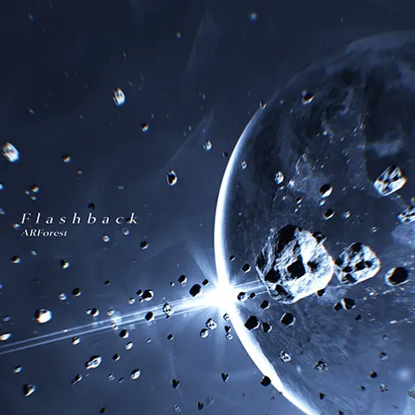
Crimson Solace
memoryfactory.lzh
Eternal Core
虚空の夢

Eternal Core
Suomi [ETR]
Arcaea
Level 8+ [+2 (hardest)]
Chronostasis
Arcaea
MERLIN
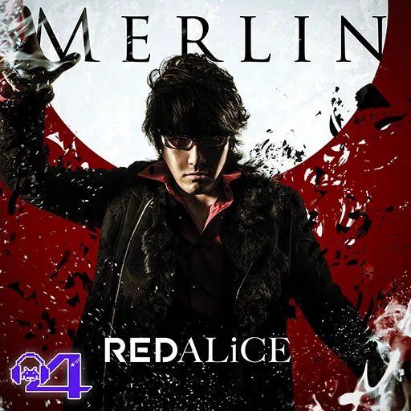
Groove Coaster
Level 8+ [spoofing]
dropdead
Memory Archive
Level 9
Level 9 [not classified]
Journey
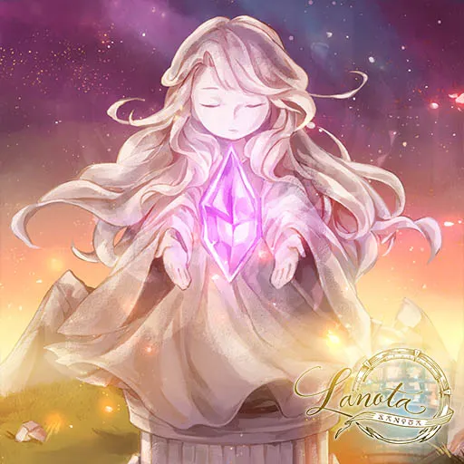
Lanota
Level 9 [-2 (easiest)]
Grievous Lady [PRS]

Vicious Labyrinth
Coastal Highway

Esoteric Order (Pale Tapestry)
Empire of Winter

Memory Archive
Faint Light (Arcaea Edit)

W.Extend 1: Visions
フライブルクとエンドロウル

Crimson Solace
Galactic Love

Memory Archive
Iconoclast
Vicious Labyrinth
Jump
Ephemeral Page
神奈川電脳暗渠

Arcaea
Life is PIANO

W.Extend 1: Visions
qualia -ideaesthesia-

Arcaea
ReviXy
Arcaea
Level 9 [-1 (easier)]
#1f1e33 [PRS]

Black Fate
Auxesia
Memory Archive
Blaster
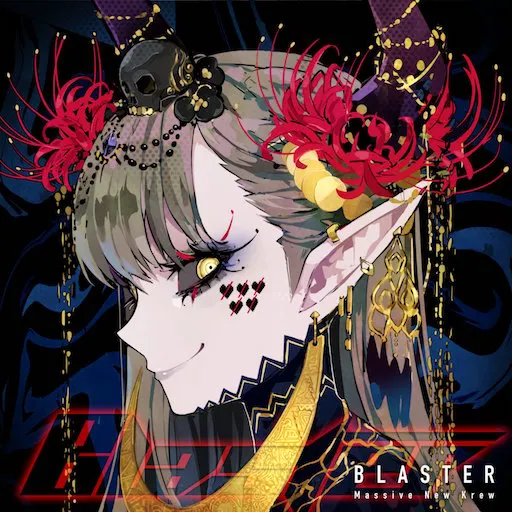
Arcaea
Blue Rose

Divided Heart
CROSS†OVER

W.Extend 1: Visions
Dynitikós

W.Extend 2: Chronicles
Essence of Twilight

Eternal Core
FANTA5Y
W.Extend 2: Chronicles
Lapis
W.Extend 1: Visions
La'qryma of the Wasteland

Memory Archive
Last
Final Verdict (Silent Answer)
無法地点

W.Extend 2: Chronicles
Libertas
Memory Archive
Lost Emotion feat. nomico

W.Extend 2: Chronicles
Oracle
Dynamix
Primeval Texture

Lasting Eden (Lasting Eden Ch.2)
Rugie
Arcaea
Strongholds
Binary Enfold
Syro
Arcaea
Teriqma
Memory Archive
inkar-usi [BYD]
Arcaea
Shades of Light in a Transcendent Realm [BYD]

Arcaea
Level 9 [0 (appropriate)]
Aegleseeker [PRS]
Esoteric Order
Fracture Ray [PRS]

Luminous Sky
最強STRONGER [PRS]

Memory Archive
AI[UE]OON
Sunset Radiance
Alice à la mode

Ephemeral Page
Alice's Suitcase

Ephemeral Page
Blocked Library

Divided Heart
ベースラインやってる？w

Memory Archive
Crystal Gravity

Esoteric Order
ネコノテ・カリタガール

Arcaea
DRG
Cytus II (Chapter 2)
Equilibrium
Black Fate
Feels So Right feat. Renko

Memory Archive
GIMMICK
W.Extend 2: Chronicles
GOODTEK (Arcaea Edit)

Arcaea
lastendconductor
Memory Archive
Let you DIVE! (nitro rmx)

WACCA
Lost Civilization

Arcaea
NULCTRL
Arcaea
Party Vinyl

Crimson Solace
Phantasia
Memory Archive
ピコPico*とらんすれーしょんっ！

Memory Archive
Small Cloud Sugar Candy

Esoteric Order (Light of Salvation)
STAGER (ALL STAGE CLEAR)

Tone Sphere
The Formula

Arcaea
Transient Space

Lasting Eden (Shifting Veil)
Turbocharger
W.Extend 1: Visions
Used to be

Cytus II
Vindication
Adverse Prelude
ΟΔΥΣΣΕΙΑ
Esoteric Order (Pale Tapestry)
Jingle [ETR]
Arcaea
MERLIN [BYD]
Groove Coaster
Vexaria [BYD]
Arcaea
Level 9 [+1 (appropriate+)]
Tempestissimo [PRS]
Black Fate
Testify [PRS]
Final Verdict
迷える音色は恋の唄

Sunset Radiance
アローンアンドローン

W.Extend 2: Chronicles
Anökumene

Arcaea
Astral tale

Memory Archive
Be There

Memory Archive
cocoro*cosmetic
Memory Archive
CROSS†SOUL

Memory Archive
Dreamin' Attraction!!

Arcaea
緋纏いの宵

Memory Archive
Fallensquare
Memory Archive
狂言綺語

W.Extend 1: Visions
felys final remix

W.Extend 2: Chronicles
Glow
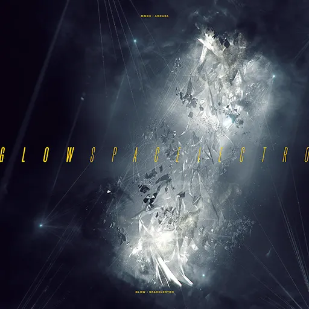
W.Extend 1: Visions
Ignotus
Arcaea
堕楽の園

Arcaea
On And On!! feat. Jenga

W.Extend 2: Chronicles
Quon
Lanota
レイヴンズ・プライド

Lasting Eden
Red and Blue

Arcaea
Sakura Fubuki

Arcaea
Specta
Lanota
Stratoliner
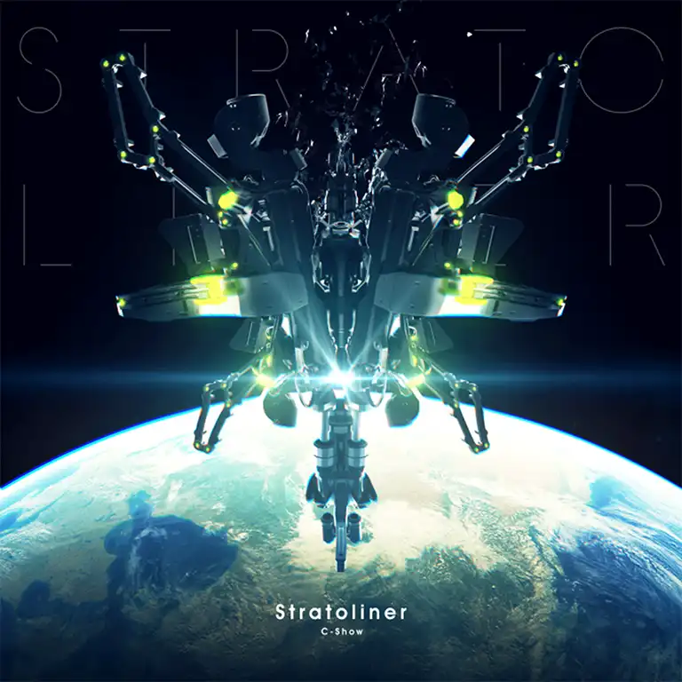
WACCA (Chapter 2)
VECTOЯ

Arcaea
夜桜吹雪

Memory Archive
Your voice so... feat. Such

Memory Archive
Last | Moment [BYD]
Final Verdict (Silent Answer)
Lumia [BYD]
Eternal Core
next to you [BYD]

Binary Enfold
Purgatorium [BYD]
Arcaea
Level 9 [+2 (harder)]
Arghena [PRS]
Lasting Eden (Lasting Eden Ch.2)
Avant Raze

Memory Archive
carmine:scythe
Memory Archive
Cybernecia Catharsis

Arcaea
DataErr0r
Memory Archive
Final Step!

Muse Dash
Head BONK ache

Memory Archive
IMPACT
CHUNITHM (Chapter 3)
不浄な白い鳥

Memory Archive
Lazy Addiction

O.N.G.E.K.I.
白道, 多希望羊と信じありく。

Arcaea
MAHOROBA
Memory Archive
MANTIS (Arcaea Ultra-Bloodrush VIP)

W.Extend 2: Chronicles
OMAKENO Stroke

Groove Coaster
無機質世界に彩を

Arcaea
Remind the Souls (Short Version)

Arcaea
with U

WACCA
Antithese [BYD]
Absolute Reason
Fairytale [BYD]
Arcaea
Level 9 [+3 (hardest)]
dropdead [PRS]
Memory Archive
ENERGY SYNERGY MATRIX

W.Extend 1: Visions
心
O.N.G.E.K.I. (Chapter 2)
Loveless Dress

Final Verdict (Silent Answer)
Purple Verse

W.Extend 1: Visions
Infinity Heaven [BYD]

Arcaea
Level 9+
Level 9+ [not classified]
Innocence [ETR]
Memory Archive
Level 9+ [-2 (easiest)]
BLRINK
Adverse Prelude
Genesis
CHUNITHM (Chapter 3)
Got hive of Ra

Groove Coaster
Heart Jackin'

Ephemeral Page (The Journey Onwards)
蛍火の雪

Sunset Radiance
Lethaeus
Ambivalent Vision
Memory Forest

Binary Enfold
SUPERNOVA
Arcaea
彼方の夢へと

Memory Archive
IONOSTREAM [ETR]
Memory Archive
Level 9+ [-1 (easier)]
amygdata
Memory Archive
BATTLE NO.1

Memory Archive
Dreadnought
Memory Archive
秋の陽炎

Muse Dash
Heavenly caress

Memory Archive
Heavensdoor
Adverse Prelude
LIVHT MY WΔY

Memory Archive
Linear Accelerator

Tone Sphere
Luna Rossa

Memory Archive
Monochrome Princess

Arcaea
nέο κόsmo

Divided Heart
Sulfur
Luminous Sky
彩る夏の恋花火

Memory Archive
Technicolour
Lasting Eden (Lasting Eden Ch.2)
The Message

Luminous Sky
μ

Memory Archive
Cybernecia Catharsis [BYD]

Arcaea
Oblivia [BYD]
Arcaea
Teriqma [BYD]
Memory Archive
Level 9+ [0 (appropriate)]
7thSense
maimai
Altale
Memory Archive
AlterAle
Esoteric Order (Light of Salvation)
Arcahv
Black Fate
Ascent
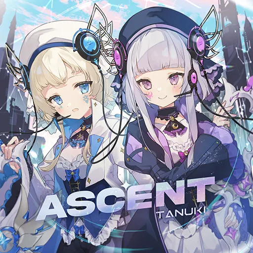
Binary Enfold (Shared Time)
Corruption
Absolute Reason
Dazzle hop

O.N.G.E.K.I.
DX超性能フルメタル少女

Groove Coaster
goldenslaughterer
Memory Archive
ヒュブリスの頂に聳えるのは

W.Extend 2: Chronicles
init()

Memory Archive
感情の摩天楼 ～Arr.Demetori

W.Extend 2: Chronicles
Let's Rock (Arcaea mix)

W.Extend 2: Chronicles
Lost Desire

Black Fate
Lost in the Abyss

Memory Archive
Nameless Passion

Lasting Eden (Shifting Veil)
Ouvertüre

WACCA (Chapter 2)
Protoflicker
Lanota (Chapter 2)
RGB
W.Extend 2: Chronicles
SACRIFICE feat. ayame

Memory Archive
SOUNDWiTCH
Vicious Labyrinth
Vandalism
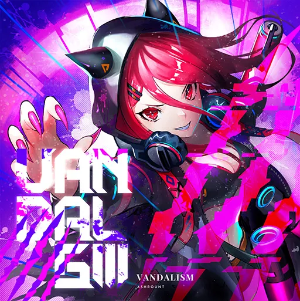
W.Extend 1: Visions
World Fragments III(radio edit)

W.Extend 2: Chronicles
qualia -ideaesthesia- [BYD]

Arcaea
Level 9+ [+1 (harder)]
Ai Drew

O.N.G.E.K.I. (Chapter 2)
雨神楽
W.Extend 2: Chronicles
Antagonism
Black Fate
B.B.K.K.B.K.K.
Memory Archive
BADTEK
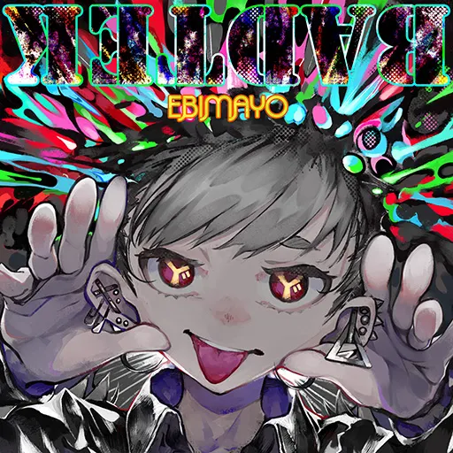
Memory Archive
Black Territory

Absolute Reason
Callima Karma

Final Verdict (Silent Answer)
Far Away Light

Esoteric Order
FLUFFY FLASH

O.N.G.E.K.I. (Chapter 2)
Galaxy Friends

Memory Archive
Infinite Strife,

Final Verdict
INTERNET YAMERO

Memory Archive
Mazy Metroplex

WACCA
Nhelv
Arcaea
Scarlet Cage

Memory Archive
Trap Crow

Arcaea
THE ULTIMACY

Memory Archive
Ultimate taste

W.Extend 2: Chronicles
Xeraphinite
Memory Archive
Dement ~after legend~ [BYD]

Arcaea
FREEF4LL [BYD]
Arcaea
Ignotus Afterburn [BYD]

Arcaea
La'qryma of the Wasteland [BYD]

Memory Archive
Last | Eternity [BYD]
Final Verdict (Silent Answer)
Level 9+ [+2 (hardest)]
Astra walkthrough

W.Extend 2: Chronicles
Black Lotus

W.Extend 1: Visions
Defection
Final Verdict
Devillic Sphere

Cytus II
Einherjar Joker

Memory Archive
Filament
Memory Archive
Macrocosmic Modulation

Memory Archive
MAXRAGE
maimai (Chapter 2)
New York Back Raise

Memory Archive
The Survivor (Game Edit)

Memory Archive
魔王

Final Verdict
GOODTEK (Arcaea Edit)[BYD]

Arcaea
神奈川電脳暗渠 [BYD]

Arcaea
Lost Civilization [BYD]

Arcaea
Moonheart [BYD]
Ambivalent Vision
Level 10
Level 10 [not classified]
Qovat
Memory Archive
Level 10 [-2 (easiest)]
Alexandrite
Memory Archive
Masquerade Legion

Memory Archive
Mirzam
Memory Archive
Modelista
Memory Archive
Scarlet Lance

Groove Coaster
妖艶魔女 -trappola bewitching-

Vicious Labyrinth
Vicious Heroism

Absolute Reason
Xanatos
Memory Archive
Level 10 [-1 (easier)]
竹
W.Extend 1: Visions
conflict
Vicious Labyrinth
Ether Strike
Luminous Sky
Malicious Mischance

Memory Archive
Metallic Punisher

Memory Archive
Oshama Scramble!

maimai
PRAGMATISM
Eternal Core
Redolent Shape

Memory Archive
Sheriruth
Eternal Core
Viyella's Tears

O.N.G.E.K.I.
IMPACT [BYD]
CHUNITHM (Chapter 3)
lastendconductor [BYD]
Memory Archive
Level 10 [0 (appropriate)]
99 Glooms

Cytus II (Chapter 2)
Capella
Memory Archive
Free Myself

Memory Archive
Garakuta Doll Play

CHUNITHM
HIVEMIND
W.Extend 1: Visions
患部で止まってすぐ溶ける ～ 狂気の優曇華院

Memory Archive
Last Celebration

CHUNITHM (Chapter 2)
Logos

Lasting Eden (Lasting Eden Ch.2)
Magnolia
Cytus II (Chapter 2)
Medusa
Muse Dash
NEO WINGS

Memory Archive
Nirv lucE

Crimson Solace
Tiferet
Tone Sphere
To the Milky Way
Memory Archive
Valhalla:0
Sunset Radiance
Wish Upon a Snow

Memory Archive
αterlβus

Dynamix
Bookmaker (2D Version) [BYD]

Arcaea
overdead. [BYD]
Memory Archive
Party Vinyl [BYD]

Crimson Solace
Level 10 [+1 (appropriate+)]
Aurgelmir
Memory Archive
Climax
CHUNITHM (Chapter 2)
cyanine
Lanota
Ego Eimi
Lasting Eden (Lasting Eden Ch.2)
Felis
Ephemeral Page
G e n g a o z o
W.Extend 1: Visions
GLORY：ROAD
Crimson Solace
緋色月下, 狂咲ノ絶 (nayuta 2017 ver.)

Memory Archive
怒槌
CHUNITHM
Löschen

Esoteric Order
PUPA
Memory Archive
Rise of the World
Lasting Eden
Trrricksters!!

CHUNITHM (Chapter 3)
γuarδina
Memory Archive
Red and Blue and Green [BYD]

Arcaea
Level 10 [+2 (harder)]
[X]
maimai (Chapter 2)
Aleph-0
W.Extend 2: Chronicles
AttraqtiA
Memory Archive
corps-sans-organes
Ambivalent Vision
eden
WACCA (Chapter 2)
GIMME DA BLOOD

Memory Archive
IZANA
Memory Archive
Kissing Lucifer

Memory Archive
Lightning Screw

Divided Heart
Pentiment
Final Verdict
アリス・リデルに捧ぐ

Ephemeral Page (The Journey Onwards)
UNKNOWN LEVELS
Lasting Eden
XTREME
WACCA (Chapter 2)
Libertas [BYD]
Memory Archive
Purple Verse [BYD]

W.Extend 1: Visions
Quon [BYD]
WACCA
Singularity VVVIP [BYD]

Binary Enfold
Level 10 [+3 (hardest)]
Arcana Eden
Final Verdict
Chronicle
W.Extend 2: Chronicles
Crimson Throne
Memory Archive
Good bye, Merry-Go-Round.

O.N.G.E.K.I. (Chapter 2)
Live Fast Die Young
Binary Enfold (Shared Time)
Lucid Traveler
Cytus II
Manic Jeer
Memory Archive
NULL APOPHENIA
Memory Archive
Overwhelm
Esoteric Order (Pale Tapestry)
Seclusion
Esoteric Order
Sheriruth (Laur Remix)

Memory Archive
妖艶魔女 -trappola bewitching- [BYD]

Vicious Labyrinth
OMAKENO Stroke [BYD]
Groove Coaster
Level 10+
Level 10+ [not classified]
狂恋ROMANCE

Memory Archive
Level 10+ [-2 (easiest)]
ouroboros -twin stroke of the end-

Groove Coaster
Singularity
Binary Enfold
Level 10+ [-1 (easier)]
Axium Crisis
Vicious Labyrinth
Cyaegha
Absolute Reason
Halcyon
Luminous Sky
烈華RESONANCE
Memory Archive
Ringed Genesis
Adverse Prelude
World Vanquisher

CHUNITHM
Level 10+ [0 (appropriate)]
͟͝͞Ⅱ́̕
Cytus II (Chapter 2)
AMAZING MIGHTYYYY!!!!

maimai
BUCHiGiRE Berserker
Memory Archive
光速神授説 - Divine Light of Myriad -

Esoteric Order (Light of Salvation)
GENOCIDER
WACCA
PRIMITIVE LIGHTS
Memory Archive
Stasis

Lanota (Chapter 2)
TeraVolt
Lasting Eden (Shifting Veil)
Heavensdoor [BYD]
Adverse Prelude
Level 10+ [+1 (harder)]
Dantalion
Black Fate
Einherjar Joker [BYD]

Memory Archive
Meta-Mysteria
WACCA (Chapter 2)
業 -善なる神とこの世の悪について-
CHUNITHM (Chapter 2)
蜘蛛の糸
CHUNITHM (Chapter 3)
Tempestissimo
Black Fate
TEmPTaTiON
maimai (Chapter 2)
ω4

O.N.G.E.K.I.
Level 10+ [+2 (hardest)]
#1f1e33
Black Fate
CHAOS
Cytus II
LAMIA
O.N.G.E.K.I. (Chapter 2)
Testify
Final Verdict
Infinite Strife, [BYD]
Final Verdict
Level 11
Level 11 [not classified]
there are no scores currently under discussion.
Level 11 [-1 (easier)]
Fracture Ray
Luminous Sky
Grievous Lady
Vicious Labyrinth
魔王 [BYD]
Final Verdict
Level 11 [0 (appropriate)]
Abstruse Dilemma
Lasting Eden
Aegleseeker
Esoteric Order
Arghena
Lasting Eden (Lasting Eden Ch.2)
最強STRONGER
Memory Archive
Vicious [ANTi] Heroism [BYD]

Absolute Reason
Level 11 [+1 (harder)]
Arcana Eden [BYD]
Final Verdict
PRAGMATISM -RESURRECTION- [BYD]
Eternal Core
Level 11 [+2 (hardest)]
Pentiment [BYD]
Final Verdict
Tempestissimo [BYD]
Black Fate
Level 12
Level 12 [0 (the most difficult)]
Testify [BYD]
Final Verdict